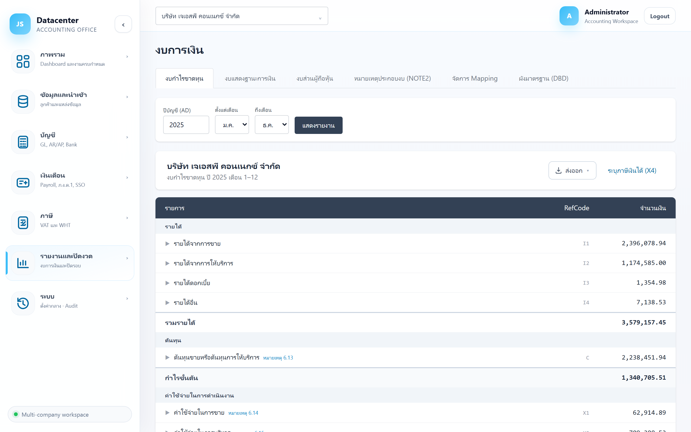
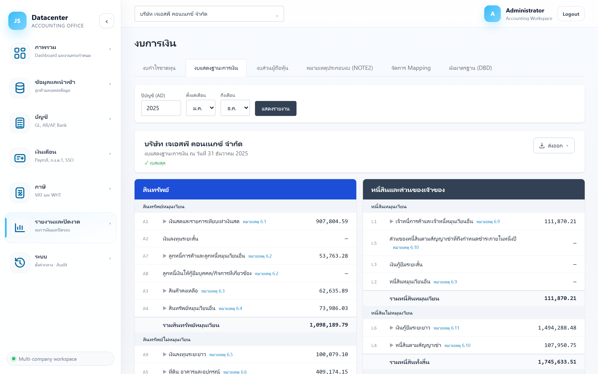
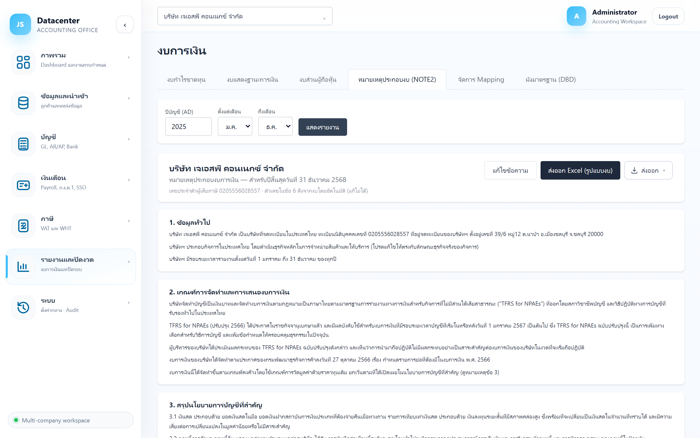

งบการเงิน
ออกงบการเงินครบชุด — งบกำไรขาดทุน · งบแสดงฐานะการเงิน · งบส่วนผู้ถือหุ้น · หมายเหตุประกอบงบ (NOTE2) พร้อมเครื่องมือจัดการ Mapping บัญชีเข้าบรรทัดงบตามผังมาตรฐาน DBD
ตัวเลขรวมรายการปรับปรุงปิดงบจาก กระดาษทำการปิดงบ ไว้แล้ว — ไม่ใช่ยอดดิบจาก Express
1. การเข้าใช้งาน
- เลือกบริษัทลูกค้า ที่แถบด้านบน
- เปิดเมนู รายงานและปิดงวด → งบการเงิน
- เลือกแท็บ → ตั้ง ปีบัญชี (และช่วงเดือนสำหรับงบกำไรขาดทุน) → กด แสดงรายงาน
ระบบล้างผลลัพธ์เมื่อเปลี่ยนแท็บหรือเปลี่ยนบริษัท เพื่อกันการอ่านตัวเลขของงวด/บริษัทเดิมโดยไม่รู้ตัว
2. แท็บ “งบกำไรขาดทุน”

| บรรทัด | ความหมาย |
|---|---|
| รายได้ → รวมรายได้ | รายได้จากการขาย/บริการและรายได้อื่น |
| ต้นทุน → กำไรขั้นต้น | ต้นทุนขาย/บริการ และกำไรขั้นต้น |
| ค่าใช้จ่ายในการดำเนินงาน | ค่าใช้จ่ายขายและบริหาร |
| กำไรก่อนต้นทุนทางการเงิน | กำไรจากการดำเนินงาน |
| ต้นทุนทางการเงิน / ภาษี | ดอกเบี้ยจ่าย และภาษีเงินได้ |
| กำไรก่อนภาษีเงินได้ | ฐานที่ใช้คำนวณภาษีใน ภ.ง.ด.50 |
| จำนวนภาษี (บาท) | ภาษีเงินได้นิติบุคคลที่บันทึกไว้จากหน้า ภ.ง.ด.50 |
รหัสอ้างอิงบรรทัดตามผังมาตรฐาน — ใช้ตรวจว่าบัญชีถูก map ไปบรรทัดที่ถูกต้อง และใช้เชื่อมกับแบบยื่นของ DBD
3. แท็บ “งบแสดงฐานะการเงิน”

| ส่วน | ประกอบด้วย |
|---|---|
| สินทรัพย์ | สินทรัพย์หมุนเวียน → รวมสินทรัพย์หมุนเวียน · สินทรัพย์ไม่หมุนเวียน → รวม · รวมสินทรัพย์ทั้งสิ้น |
| หนี้สินและส่วนของเจ้าของ | หนี้สินหมุนเวียน · หนี้สินไม่หมุนเวียน · รวมหนี้สินทั้งสิ้น · ส่วนของเจ้าของ |
ใต้ชื่อบริษัทจะมีป้ายยืนยันว่า สินทรัพย์ = หนี้สิน + ส่วนของเจ้าของ — ถ้าไม่ขึ้นป้ายนี้ อย่าเพิ่งส่งงบ ให้กลับไปตรวจ งบทดลอง และรายการปรับปรุง
บรรทัดที่มีหมายเหตุประกอบจะมีเลขอ้างอิงกำกับ ตรงกับหัวข้อในแท็บหมายเหตุประกอบงบ — ใช้ตรวจว่าหมายเหตุครบทุกบรรทัดที่ต้องมี
4. แท็บ “งบส่วนผู้ถือหุ้น”
| บรรทัด | ความหมาย |
|---|---|
| ยอดคงเหลือต้นปี | ทุนและกำไรสะสมยกมา |
| กำไร (ขาดทุน) สุทธิสำหรับปี | ผลการดำเนินงานปีนี้จากงบกำไรขาดทุน |
| เพิ่มทุน / เงินปันผล / รายการอื่น | รายการที่กระทบส่วนของเจ้าของโดยตรง |
| ยอดคงเหลือปลายปี | ต้องตรงกับส่วนของเจ้าของในงบแสดงฐานะการเงิน |
5. แท็บ “หมายเหตุประกอบงบ (NOTE2)”

ข้อความ (นโยบายบัญชี ฯลฯ) = แก้ไขได้ · ตัวเลข = ผูกกับข้อมูลจริงอัตโนมัติ ทั้งปีปัจจุบันและปีก่อน ไม่ต้องพิมพ์เอง
| ปุ่ม | หน้าที่ |
|---|---|
| แก้ไขข้อความ | แก้ข้อความมาตรฐานของหมายเหตุนั้น |
| แก้ไขเฉพาะบริษัท | แก้ข้อความให้ต่างจากมาตรฐานเฉพาะบริษัทนี้ โดยไม่กระทบบริษัทอื่น |
ตารางในหมายเหตุที่เกี่ยวกับสินทรัพย์ถาวรจะแสดง ยอดต้นปี · เพิ่มขึ้น · ลดลง · ยอดปลายปี ทั้งฝั่งราคาทุนและค่าเสื่อมราคาสะสม — ดึงจาก ทะเบียนสินทรัพย์ โดยตรง
ปุ่ม “แก้ไขข้อความ” แก้ template กลางที่ทุกบริษัทใช้ร่วมกัน — ถ้าต้องการแก้เฉพาะรายนี้ ให้ใช้ “แก้ไขเฉพาะบริษัท” เสมอ
6. แท็บ “จัดการ Mapping”
บอกระบบว่าบัญชีในผังบัญชีไปลงบรรทัดไหนของงบ — ตั้งครั้งเดียวใช้ได้ทุกปี
| ส่วน | ใช้ทำอะไร |
|---|---|
| ตรวจบัญชีตกหล่น (ก่อนปิดงบ) | เลือกปีแล้วกดตรวจ — ระบบไล่หาบัญชีที่ มียอดแต่ยังไม่ได้ map แสดงเป็นรหัสบัญชี · ชื่อบัญชี · ยอดสิ้นปี |
| เพิ่ม / แก้ไข Mapping | เลือกบัญชี แล้วเลือกบรรทัดในงบที่ต้องการให้ลง |
| ตาราง Mapping ปัจจุบัน | รายการที่ map ไว้แล้ว (ชื่อบรรทัดในงบ · รหัสบัญชี · ชื่อบัญชี) |
บัญชีที่ไม่ได้ map จะ ไม่ปรากฏในงบ ทำให้งบไม่สมดุลหรือยอดขาดหายโดยไม่มีสัญญาณเตือน — กดตรวจก่อนเสมอ ควรได้ผลลัพธ์ว่าง
7. แท็บ “ผังมาตรฐาน (DBD)”
ดูผังบรรทัดงบมาตรฐานที่ระบบใช้ (master taxonomy ใช้ร่วมทุกบริษัท) พร้อมสถิติว่า บริษัทนี้ map ครอบคลุมแค่ไหน
| ตัวเลข / คอลัมน์ | ความหมาย |
|---|---|
| บรรทัดมาตรฐานทั้งหมด | จำนวนบรรทัดในผังมาตรฐาน |
| บรรทัดที่มีบัญชี map | บรรทัดที่บริษัทนี้มีบัญชีลงอยู่ |
| บัญชีที่ map รวม | จำนวนบัญชีที่ถูก map แล้ว |
| รหัสกลุ่ม · ชื่อบรรทัดในงบ · บัญชีที่ map (บริษัทนี้) | ตารางรายบรรทัด — บรรทัดที่ยังไม่มีบัญชีจะขึ้น “ยังไม่มีบัญชี” (ปกติ ไม่ใช่ทุกบริษัทใช้ทุกบรรทัด) |
8. ลำดับการออกงบ
- ตรวจบัญชีตกหล่น ที่แท็บจัดการ Mapping ให้ผลว่าง
- ดูงบกำไรขาดทุน — ตรวจว่ากำไรก่อนภาษีสมเหตุสมผล
- คำนวณภาษี ที่ ภ.ง.ด.50 แล้วบันทึกลงงบ
- ดูงบแสดงฐานะการเงิน — ต้องขึ้น ✓ งบสมดุล
- ตรวจงบส่วนผู้ถือหุ้น — ยอดปลายปีต้องตรงกับส่วนของเจ้าของในงบฐานะการเงิน
- ตรวจหมายเหตุประกอบงบ ให้ครบทุกบรรทัดที่มีเลขหมายเหตุอ้างอิง
- ส่งออกงบ แล้วบันทึกเป็นเวอร์ชันที่ ชุดรายงานงบ
- ปิดรอบบัญชี ที่ ปิดรอบบัญชี
9. ปัญหาที่พบบ่อย
| อาการ | สาเหตุและวิธีแก้ |
|---|---|
| ไม่ขึ้นป้าย “งบสมดุล” | มีบัญชีที่ยังไม่ได้ map หรือรายการปรับปรุงไม่ดุล — ตรวจบัญชีตกหล่นก่อน แล้วดู กระดาษทำการปิดงบ |
| บางบรรทัดยอดเป็น 0 ทั้งที่มีข้อมูล | บัญชีนั้นถูก map ไปบรรทัดอื่น — ตรวจที่แท็บจัดการ Mapping |
| ภาษีเงินได้ไม่ขึ้นในงบ | ยังไม่ได้กด “บันทึก + ลงภาษีในงบ” ที่หน้า ภ.ง.ด.50 |
| ยอดปีก่อนในหมายเหตุว่าง | ยังไม่ได้นำเข้า/ลงบัญชีข้อมูลปีก่อน |
| ตัวเลขในหมายเหตุสินทรัพย์ไม่ตรงกับทะเบียน | ยังไม่ได้สร้างรายการปรับปรุงค่าเสื่อมของปีนั้น ที่ สินทรัพย์ถาวร |